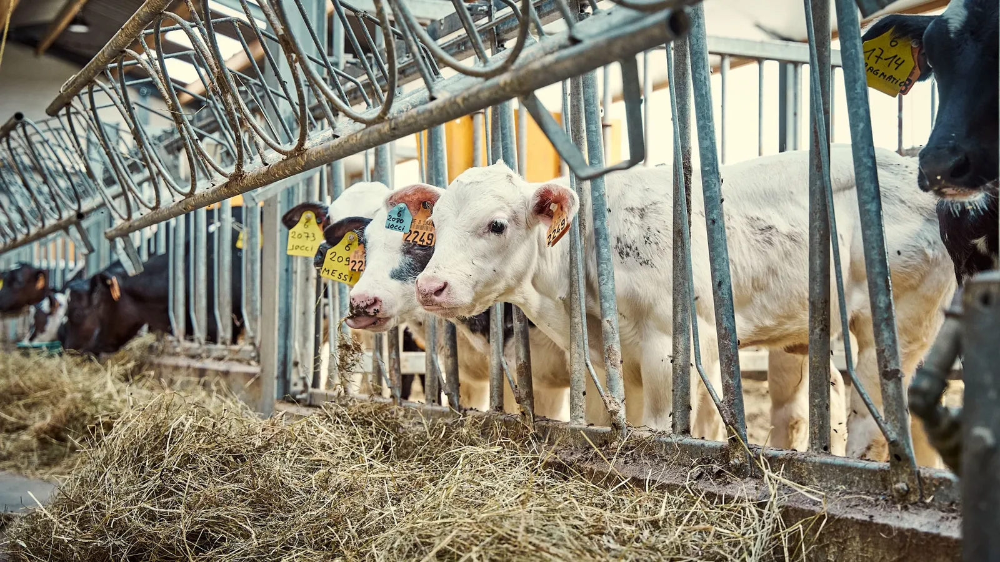

Che età hanno gli animali quando li uccidiamo?

È l'età tipica di macellazione dei polli da carne. Sono valori tipici o intervalli commerciali, non medie nazionali ufficiali.
A che età vengono uccisi
La barra è la vita possibile della specie (100%). L'equivalente umano è un calcolo illustrativo: quota di vita vissuta × 83,7 anni (media di 81,7 e 85,7). Non è un'equivalenza biologica. Le età sono valori tipici, non medie nazionali.
Senza dato di età in questa pagina: equini e piccioni. Record di longevità (AnAge): cavallo 57 anni, asino 47, piccione 35, in cattività; per i piccioni allevati per carne e per i muli non c'è un record né un'età di macellazione documentati. I dati su bufalini e bufale sono regionali (Lazio, 2000–2012) e non nazionali. Per cozze e vongole la percentuale usa la longevità in natura, non in allevamento.
La risposta corretta non è «sono tutti cuccioli». Molti animali destinati alla carne sono macellati quando sono ancora neonati, giovani o sessualmente immaturi. Altri, come i suini pesanti, sono giovani adulti. Le galline ovaiole a fine ciclo sono adulte, ma lontane dalla longevità potenziale della specie.
L'età di macellazione dipende soprattutto dal raggiungimento del peso commerciale o dalla fine della fase produttiva, non dall'invecchiamento naturale.
Non esiste una statistica italiana sull'età individuale degli animali macellati. Le età sono valori tipici, intervalli commerciali, limiti di disciplinare o risultati di studi, non medie nazionali ufficiali. La longevità di riferimento non è una durata media della vita.
In quale fase vivono?
Possiamo dire «uccidiamo cuccioli»?
Sì, ma non per tutte le categorie. Cuccioli o lattanti: agnelli da latte e capretti. Giovani prepuberi: polli da carne, molte anatre e numerosi tacchini. Adolescenti: conigli da carne. Giovani adulti: suini pesanti. Adulti non anziani: galline ovaiole a fine ciclo. Età molto variabile: bovini da riforma, bufalini, riproduttori, equidi e animali abbattuti per ragioni sanitarie.
«Tutti gli animali macellati sono cuccioli» sarebbe scientificamente sbagliato. È corretto dire che una parte molto consistente viene macellata prima della maturità completa o poco dopo.
Età alla macellazione
| Animale | Età documentata | Stadio biologico | «Cucciolo»? |
|---|---|---|---|
| Pollo da carne rapido | 35–42 giorni | Giovane prepubere | Sì, è ancora un giovane pollo |
| Pollo biologico | minimo 81 giorni | Giovane prepubere | Sì |
| Gallina ovaiola a fine ciclo | circa 72 settimane (cicli fino a 80–100) | Adulta | No, ma non è normalmente anziana |
| Tacchino da carne | femmine 15–18 settimane, maschi 20–22 | Giovane o peripubere | Generalmente sì, giovane |
| Anatra muta da carne | 51–84 giorni | Giovane prepubere | Sì |
| Coniglio da carne | 71–86 giorni | Peripubere | Giovane, non neonato |
| Suino pesante italiano | almeno 9 mesi | Giovane adulto | No, ma è un adulto molto giovane |
| Agnello da latte | 28–42 giorni | Lattante e prepubere | Sì, inequivocabilmente |
| Capretto | 2–3 mesi | Prepubere | Sì |
| Branzino allevato | 18–24 mesi | Sessualmente immaturo nella maggior parte dei casi | Giovane |
| Orata allevata | circa 15 mesi | Giovane | Giovane |
| Trota iridea (studio italiano) | circa 75 settimane | Subadulta | Giovane o subadulta |
Bovini e agnelli: stime di associazione
| Animale | Età in allevamento | Aspettativa di vita naturale |
|---|---|---|
| Vitelli «scarto» del latte | 6–8 mesi | fino a 20 anni e oltre |
| Bovini da carne | 1–2,5 anni | fino a 20 anni e oltre |
| Mucche da latte | 3–4 anni (raramente 5) | fino a 20 anni e oltre |
| Agnelli | 3–6 mesi | fino a 12 anni |
Fonte: Agireora, che attribuisce i dati all'articolo «Are you a baby eater?» dell'associazione VIVA!. Sono stime di associazione, senza fonti per le singole cifre, quindi non entrano nei confronti sopra. Per bovini, bufalini ed equidi manca una distribuzione nazionale completa per età.
Quanto vivono in allevamento
| Animale | Durata media in allevamento | Longevità massima documentata |
|---|---|---|
| Pecora | circa 5 anni, età media di eliminazione dal gregge (Hoffman e Valencak 2020); in Fig. 1 una vita effettiva di circa 7 anni, pari al 31% del massimo | 22,8 anni (AnAge) |
| Capra | 4–5,7 anni, età media di riforma (circa 4 in una popolazione da latte francese; 4,5–5,7 in Nuova Zelanda); in Fig. 1 circa 6 anni, il 29% del massimo | 20,8 anni (AnAge) |
| Vacca da latte | circa 5,4 anni di vita effettiva, il 27% del massimo (Fig. 1 di Hoffman e Valencak 2020) | circa 20 anni (AnAge) |
| Bovino da carne | nessuna media generale: i bovini da carne sono macellati prima di raggiungere la longevità massima (AnAge) | circa 20 anni (specie, AnAge) |
| Gallina ovaiola | 70–100 settimane in allevamento commerciale | nessun dato per le linee ovaiole commerciali |
Le medie di allevamento misurano quando gli animali vengono eliminati o riformati, non la morte naturale; i massimi sono record individuali in cattività. Verificato sui testi originali: Hoffman e Valencak (2020), Geroscience 42:909–922, e le schede AnAge di Ovis aries, Capra hircus e Bos taurus (build 15). Per il bovino AnAge giudica il dato «discutibile»: le stime sono tra 12 e oltre 20 anni, con segnalazioni non verificate di capi più longevi. Il dato sulle galline ovaiole (RSPCA) non è ancora verificato.
Limiti
- Le età commerciali cambiano con razza, sesso, peso richiesto e sistema di allevamento.
- Gli studi sperimentali non rappresentano automaticamente tutta la produzione italiana.
- La longevità massima non è la durata media della vita.
- Le linee a crescita rapida possono avere una longevità diversa dalle razze tradizionali.
- Per pesci e molluschi mancano serie italiane che colleghino individui, età e causa dell'uccisione.
- La classificazione «cucciolo» o «adulto» si basa sullo sviluppo biologico, non solo sulla percentuale di vita trascorsa.
Fonti principali delle età: studi su PubMed Central e Università di Padova per polli, conigli, suini, agnelli e capretti, FAO e FishBase per i pesci. Le longevità di riferimento vengono da fonti divulgative e da FishBase: i confronti sono illustrativi. Elenco completo nella pagina Info e fonti.